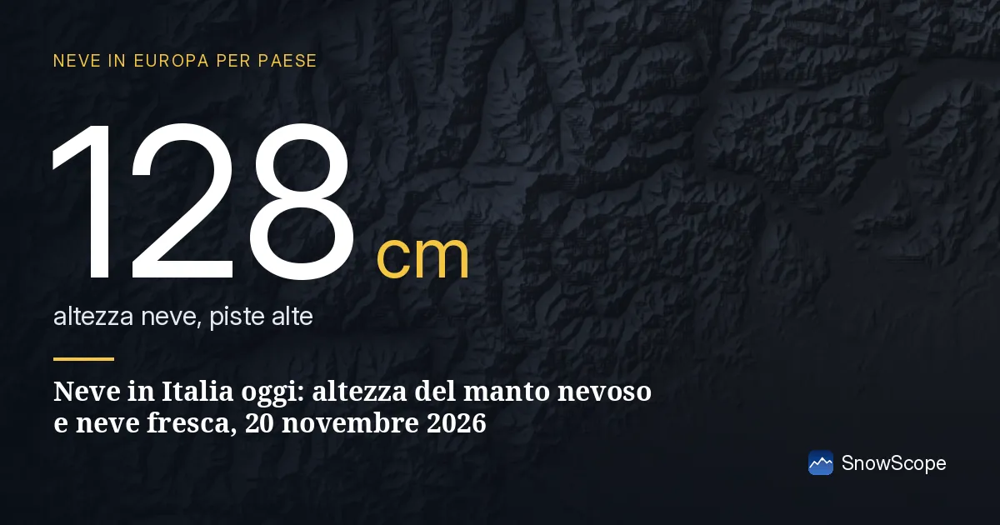

Bollettini neve · Neve in Europa per paese
Neve in Europa per paese: Venerdì 20 novembre: la neve copre circa 20.940 km² delle montagne in Italia. Sono 3.530 km² in meno rispetto a ieri. È il …
La neve per paese oggi
I paesi più bianchi oggi: Sweden (95 %), Norway (92 %) e Finland (77 %).
Più neve fresca nella settimana: Francia (92 cm), Svizzera (74 cm) e Italia (62 cm).
| Paese | Bianco | Località più innevata | Prossimi 7 giorni |
|---|---|---|---|
| Sweden | 95 % | Björkliden · 138 cm | 12 cm |
| Norway | 92 % | Riksgränsen · 167 cm | 26 cm |
| Finland | 77 % | Pyhä · 30 cm | 8 cm |
| Svizzera | 64 % | Anzère · 86 cm | 74 cm |
| Austria | 56 % | Stubaier Gletscher · 63 cm | 35 cm |
| Ukraine | 52 % | Драгобрат · 17 cm | 17 cm |
| Italia | 26 % | Pfelders · 118 cm | 62 cm |
| Francia | 14 % | Orelle · 136 cm | 92 cm |
| Slovakia | 14 % | Vysoké Tatry · 34 cm | 11 cm |
| UK | 13 % | Yad Moss · 24 cm | 16 cm |
| Poland | 11 % | Kasprowy Wierch · 36 cm | 14 cm |
| Romania | 11 % | Balea Lac · 16 cm | 37 cm |
| Slovenia | 10 % | Sella Nevea · 28 cm | 53 cm |
| Germania | 7 % | Zugspitze · 81 cm | 26 cm |
| Andorra | 5 % | Canaro · 15 cm | 26 cm |
| Albania | 4 % | – | 34 cm |
| Montenegro | 3 % | Ski centar Savin kuk · 11 cm | 32 cm |
| Czechia | 2 % | Ramzová · 13 cm | 10 cm |
| Bulgaria | 1 % | Bansko · 10 cm | 22 cm |
| North Macedonia | 1 % | – | 26 cm |
| Kosovo | 1 % | Brezovica · 1 cm | 42 cm |
| Bosnia and Herzegovina | 0 % | – | 18 cm |
| Spain | 0 % | Estació d'Esquí Baqueira-Beret · 12 cm | 21 cm |
| Greece | 0 % | – | 3 cm |
| Croatia | 0 % | Sljeme · 5 cm | 26 cm |
| Hungary | 0 % | – | 17 cm |
| Ireland | 0 % | – | 11 cm |
| Portugal | 0 % | – | 8 cm |
| Serbia | 0 % | – | 7 cm |
Neve in Italia oggi: altezza del manto nevoso e neve fresca, 20 novembre 2026

Venerdì 20 novembre: la neve copre circa 20.940 km² delle montagne in Italia. Sono 3.530 km² in meno rispetto a ieri. È il 22 % del territorio montano in Italia che seguiamo.
Il manto nevoso oggi
Sette giorni fa la superficie era di 21.760 km², 820 km² in più di adesso. Il terreno è per lo più bianco da circa 1.700 m in su.

Neve in Italia il 20 novembre: manto nevoso, neve fresca, altezza per quota, prossimi giorni e migliori località.

Glacier 3000 guida la Svizzera con 124 cm dopo 128 cm di neve in 72 ore. La copertura nevosa è salita al 64% in tutto il paese il 20 novembre.

Neve fresca ha colpito duramente le alte quote italiane. La Valle d'Aosta ha ricevuto 215 cm in 72 ore; le Alpi Piemontesi 76 cm. Dati del 19 novembre.

Le profondità della neve svizzera il 19 novembre sono ben al di sopra della norma. Glacier 3000 registra 60 cm, più del doppio della profondità tipica per questa data. La prossima settimana porterà fino a 125 cm in più.